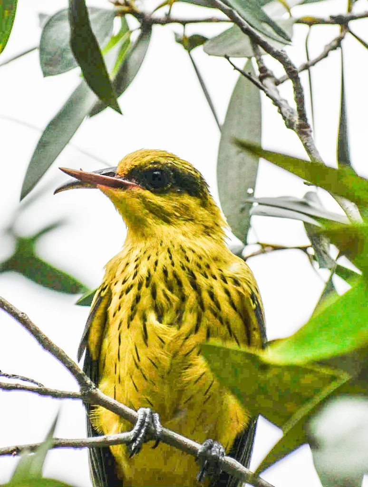

鸟类 · 动物界
黑枕黄鹂 Oriolus chinensis

羽色金黄的夏候鸟，黑色贯眼纹延伸到枕部，鸣声清亮婉转，常藏在阔叶树冠层，只闻其声难见其形。
- 分类
- 门脊索动物门纲鸟纲目雀形目科黄鹂科属黄鹂属
- 栖息环境
- 阔叶林、混交林、公园、村落与果园的树冠层
- 地理分布
- 繁殖于中国东部至西南，冬季南迁至东南亚
- 保护级别
- IUCN 无危（LC）
物种志
黑枕黄鹂体长 23–27 cm，雄鸟全身鲜黄，翼与尾黑色并带黄色边缘，从嘴基到枕部有一条宽阔的黑纹，因此得名；雌鸟颜色偏黄绿，黑纹较窄。它多在阔叶林、公园和村落的树冠层活动，动作隐蔽，常只闻其声不见其形，取食昆虫、浆果和果实。
黑枕黄鹂繁殖于中国东部、华北至西南，冬季南迁到东南亚。它在树冠层用草茎、树皮编织杯状巢，巢常悬挂在细枝间。黄鹂的鸣声婉转多变，是夏日林间最有辨识度的声音之一。由于依赖高大阔叶树，城市绿化中保留大树对它们很重要。
形态与习性
- 体长23–27 cm
- 羽色雄鸟鲜黄，翼尾黑色带黄缘
- 识别黑色贯眼纹延伸至枕部
- 食性昆虫、浆果与果实
- 繁殖在树冠细枝间编织杯状巢
趣味知识
- 黑枕黄鹂的“黑枕”指黑色贯眼纹一直延伸到后枕部。
- 它常在树冠层活动，声音比身影更容易被注意到。
- 黄鹂是夏候鸟，秋冬会迁往东南亚。